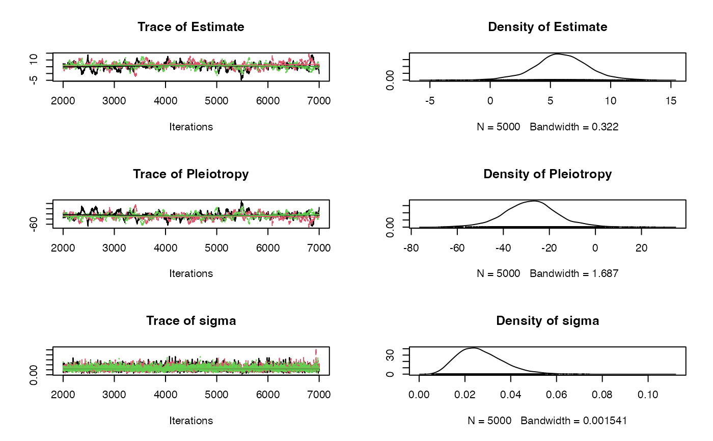

Bayesian radial MR-Egger model with a choice of prior distributions fitted using JAGS.
Source:R/mr_radialegger_rjags.R
mr_radialegger_rjags.RdBayesian radial MR-Egger model with a choice of prior distributions fitted using JAGS.
Usage
mr_radialegger_rjags(
object,
prior = "default",
betaprior = "",
sigmaprior = "",
n.chains = 3,
n.burn = 1000,
n.iter = 5000,
seed = NULL,
rho = 0.5,
...
)Arguments
- object
A data object of class
mr_format.- prior
A character string for selecting the prior distributions;
"default"selects a non-informative set of priors;"weak"selects weakly informative priors;"pseudo"selects a pseudo-horseshoe prior on the causal effect;"joint"selects a joint prior on the intercept and slope.
- betaprior
A character string in JAGS syntax to allow a user defined prior for the causal effect.
- sigmaprior
A character string in JAGS syntax to allow a user defined prior for the residual standard deviation.
- n.chains
Numeric indicating the number of chains used in the MCMC estimation, the default is
3chains.- n.burn
Numeric indicating the burn-in period of the Bayesian MCMC estimation. The default is
1000samples.- n.iter
Numeric indicating the number of iterations in the Bayesian MCMC estimation. The default is
5000iterations.- seed
Numeric indicating the random number seed. The default is the rjags default.
- rho
Numeric indicating the correlation coefficient input into the joint prior distribution. The default is
0.5.- ...
Additional arguments passed through to
rjags::jags.model().
Value
An object of class radialeggerjags containing the following components:
- AvgPleio
The mean of the simulated pleiotropic effect
- CausalEffect
The mean of the simulated causal effect
- StandardError
Standard deviation of the simulated causal effect
- sigma
The mean of the simaulted residual standard deviation
- CredibleInterval
The credible interval for the causal effect, which includes the lower (2.5%), median (50%) and upper intervals (97.5%)
- samples
Output of the Bayesian MCMC samples
- Prior
The specified priors
References
Bowden, J., et al., Improving the visualization, interpretation and analysis of two-sample summary data Mendelian randomization via the Radial plot and Radial regression. International Journal of Epidemiology, 2018. 47(4): p. 1264-1278. doi:10.1093/ije/dyy101 .
Examples
if (requireNamespace("rjags", quietly = TRUE)) {
fit <- mr_radialegger_rjags(bmi_insulin)
summary(fit)
plot(fit$samples)
# 90% credible interval
fitdf <- do.call(rbind.data.frame, fit$samples)
cri90 <- quantile(fitdf$Estimate, probs = c(0.05, 0.95))
print(cri90)
}
#> Warning: The mean of the sigma parameter, the residual standard deviation, is less than 1, we recommend refitting the model with sigma constrained to be >= 1.
#> Prior :
#>
#> Pleiotropy ~ dnorm(0, 1E-3)
#> Estimate ~ dnorm(0, 1E-3)
#> sigma ~ dunif(.0001, 10)
#>
#> Estimation results:
#>
#> MCMC iterations = 6000
#> Burn in = 1000
#> Sample size by chain = 5000
#> Number of Chains = 3
#> Number of SNPs = 14
#>
#> Inflating Parameter: 0.02691197
#>
#> Estimate SD 2.5% 50% 97.5%
#> Avg Pleio -27.966425 11.896242 -51.845794 -27.974842 -3.141311
#> Causal Effect 5.878801 2.277781 1.121291 5.878143 10.460377

#> 5% 95%
#> 2.039501 9.561081